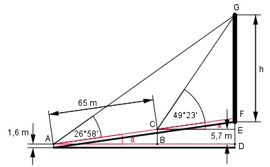

Aufgabe 101 Um die Höhe h eines Kirchturmes zu bestimmen, hat der Vermesser eine Standlinie von 65 m abgesteckt, die um 5,7 m ansteigt und direkt auf den Turm zuläuft. Von ihren Eckpunkten aus erscheint die Spitze unter den Höhenwinkeln α = 49°23' und β = 26°58'. Wie hoch ist der Turm?

Im Dreieck ABC: 5,7 m sin α = ------- = 0,0877 --> α = 5° 65 m 5,7 m tan 5° = --------- |*AB AB AB * tan 5° = 5,7 m |:tan 5° 5,7 m 5,7 m AB = --------- = --------- = 65,1 m tan 5° 0,0875 23 23’ = ----° = 0,3833° 60 58 58’ = ----° = 0,9667° 60 Im Dreieck CEG: EG tan (49,3833° + 5°) = ---- |*CE CE CE * tan 54,3833° = EG EG = 1,3959 * CE Im Dreieck ADF: EG + 5,7 m tan (26,9667° + 5°) = -------------- |*(CE + 65,1) CE + 65,1 m (CE + 65,1) * tan 31,9667° = 1,3959 * CE + 5,7 CE * 0,6241 + 65,1 * 0,6241 = = 1,3959 * CE + 5,7 |-0,6241 * CE 40,6 = 0,7718 * CE + 5,7 |-5,7 34,9 = 0,7718 * CE |:0,7718 CE = 45,2 m EG = 1,3959 * CE = 1,3959 * 45,2 m = 63,1 m AD = AB + CE = 65,1 m + 45,2 = 110,3 m DF tan 5° = ---------- |*110,3 m 110,3 m DF = tan 5° * 110,3 m = 0,0875 * 110,3 m = 9,7 m GF = GE + 5,7 m – DF GF = 63,1 m + 5,7 m – 9,7 m = 59,1 m h = GF +1,6 m = 59,1 m + 1,6 m = 60,7 m